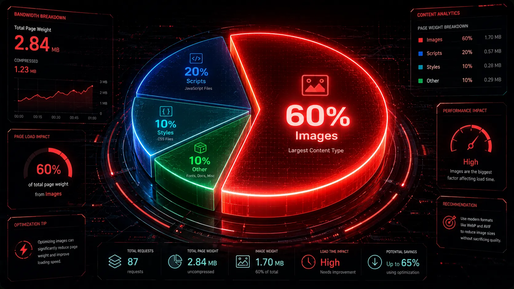

In the digital age, consumer patience is practically non-existent. Statistical studies show that if a webpage takes longer than 3 seconds to load, over 50% of mobile users will abandon the site entirely before seeing a single word of content. The absolute number one culprit behind these painfully slow loading times? Unoptimized, heavy images.

Using a free WebP converter is generally considered the fastest, easiest, and most impactful technical fix to this massive problem. Let's explore the actual computer science behind why the WebP format is so effective at speeding up your website and significantly boosting your SEO metrics.
Understanding the Concept of 'Payload'
When a user types your URL into their browser or clicks a link from Google, their device must download all the assets required to physically display the page. This includes HTML code, CSS stylesheets, Javascript files, and of course, images. The total combined file size of all these assets is referred to by developers as the payload.
On the average modern webpage, visual media (images and videos) accounts for over 60% of the total payload data. If you have ten high-resolution 500KB JPEG images on your homepage, your user's browser has to download 5 full Megabytes of data before the site finishes rendering. On a slow 3G or 4G mobile connection, transferring 5MB of data can take an agonizingly long time.

How WebP Solves the Payload Problem
WebP improves speed directly by attacking the payload issue through vastly superior compression algorithms. Developed by Google, WebP uses a technique called block prediction.
When a JPEG saves an image, it essentially saves information for every single tiny pixel. WebP, on the other hand, looks at a block of pixels, mathematically predicts what the neighboring pixels will look like based on that first block, and only encodes the slight differences. This highly advanced mathematical approach allows WebP to represent the exact same visual data using up to 34% fewer bytes.
"By reducing the payload size of your visual media, you directly reduce the time it takes for your web server to transmit data across the internet to the user's screen."
The Direct Impact on Core Web Vitals (LCP)
Google evaluates website user experience using a strict system called Core Web Vitals. One of the most critical metrics in this system is LCP (Largest Contentful Paint). LCP measures exactly how long it takes for the largest visual element on the screen (which is almost always a hero image, slider, or banner) to become fully visible to the user.
If your hero image is a massive 2MB PNG file, your LCP score will be marked as "Poor" by Google, which will actively suppress your search rankings. However, if you run that same hero image through Webp Moder by Shekh, you can instantly compress it down to a 300KB WebP file. Because the file is radically smaller, the browser downloads and paints it almost instantly, securing a "Good" LCP score and satisfying Google's algorithm.
Boost Your Website Speed Now
Don't let heavy JPEGs ruin your Google rankings and user experience. Convert your media instantly and securely in your browser.
⚡ Access WebP ConverterFrequently Asked Questions
Will converting to WebP fix a slow hosting server?
No. While WebP drastically reduces the amount of data your server needs to send, it cannot fix a poor Time to First Byte (TTFB) caused by cheap, low-quality hosting. However, optimizing your images is the most effective front-end optimization you can perform before upgrading your server.
Do I need to hire a developer to use WebP?
Not at all. If you use a modern CMS like WordPress, Shopify, or Wix, simply use our WebP converter tool to optimize your images beforehand, and upload them exactly as you would a normal JPG. Modern platforms support WebP out of the box.
Does WebP speed up mobile sites more than desktop sites?
Yes, significantly. Because mobile users often rely on cellular data networks (which are much slower and less stable than home broadband), reducing file size has a profoundly larger impact on mobile load times than on desktop.
Conclusion
Improving website speed is not an option; it is a necessity for survival in 2026. The science is clear: smaller payloads result in faster load times, happier users, and higher search engine rankings. By utilizing tools like Webp Moder by Shekh, you can effortlessly harness the power of WebP compression and give your website the competitive edge it needs to succeed.